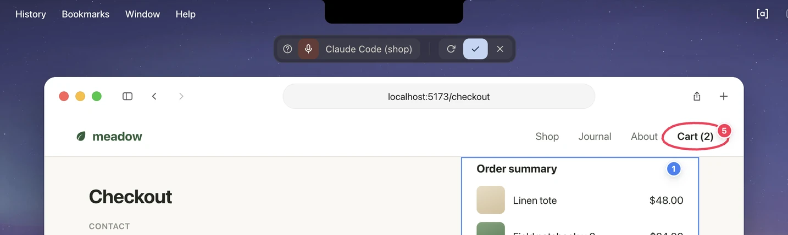
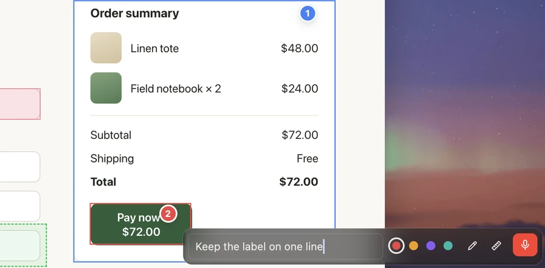

Report bugs out loud while you test.
Press ⌃⌥Space, click what's wrong and say why. Press it again, and it's typed into your coding agent's chat as your own message, with the screenshot and the element you clicked.
Also for Windows and Linux. View on GitHub
Every screen freezes.
Opens in about 110 ms on a Mac, over anything on screen, under one small pill.

Click what's wrong. Say why.
Each pin lands at the word you said as you placed it. Measure, draw, or drag a pin's number to show where it should go.

It's in your agent's chat.
As your own message, typed in the way you would, with your voice and your annotations already in place. Nothing to connect, nothing listening.
From your voice
- What you said, word for word, each pin's number where you said it.
From your annotations
- The screenshot, around what you marked, with its pins.
- Each pin: the element's role and label, and a CSS-like location.
- What you typed on a pin, under that pin.
- What you measured, in points, and on which screen.
From your screen
- Where it was: the app, the window and the page.
Works with Claude Code Codex OpenCode Gemini CLI Copilot CLI Qwen Code
More than a screenshot.
On anything on screen.
- Into the chat you're inThe session you typed into last: Claude Code, Codex, OpenCode and more.
- Nothing to install in itTyped in as you would, in Terminal, Ghostty or Diri; on Windows and Linux, any terminal.
- Or a new sessionPick an agent and a folder: it starts there, with the aside as its first message.
- Point, don't describeClick an element or drag over an area: its name, page and place go with your words.
- Show where it should goDrag a pin's number: a copy lands where you drop it, with an arrow, and the pin says where to.
- Measure anythingDistances, sizes and guides, in any app, not just the browser.
- Draw and cropCircle, underline or point with an arrow, or take just part of the screen.
- Talk, or typeEach pin lands at the word you said as you placed it. Muted, each opens a card to type in.
- Freeze, use, freeze againOpens in about 110 ms on a Mac. One aside holds every freeze, in the order you went.
- Local, verbatim and freeWhisper on your own computer, word for word, in any language. No account, no audio sent.
- A history, not filesEvery aside kept on your computer for 30 days, to read or send again.
- From the keyboardTab through pins and sessions, or press a pin's number. ? shows every key.
Install
Free, with no account.
-
Get asides
Mac
Disk imageDrag asides to Applications. macOS 14 or later, Apple silicon.Homebrewbrew tap mihaicristianfarcas/asides \ https://github.com/mihaicristianfarcas/asides brew install --cask mihaicristianfarcas/asides/asidesSigned and notarized by Apple.
Updates itself as it quits.
To remove it,
brew uninstall --cask asides, or deleteasides.appand/usr/local/bin/asides.Windows
Signed. SmartScreen may still ask about a new release: More info, then Run anyway.
Updates itself as it quits.
To remove it, Settings → Apps.
Linux
Archmakepkg -sibeside the PKGBUILD.Needs GNOME or KDE on Wayland, or any X11 desktop, with Vulkan.
Signed with minisign: each file has its signature beside it.
Updates: asides says when a new version is out. Install it over this one, the same way.
To remove it,
apt remove asides,dnf remove asides,pacman -R asides-bin, orinstall.sh --uninstall. -
Open it
Setup shows how it works, then walks you through the permissions, the voice model (190 MB) and where new sessions open. Skip it, and asides asks as each is first needed.
-
Start your coding agent, as usual
In Terminal, Ghostty or Diri; on Windows and Linux, in any terminal. There's nothing to set up in it.
cd ~/code/shop && claude -
Press ⌃⌥Space over the app you're testing
Click what's wrong, say why, and press it again.
-
Let your agent look back, if you like
Through
asides mcp, it can read past asides and measure screenshots.claude mcp add --scope user asides -- asides mcp codex mcp add asides -- asides mcp opencode mcp add --global asides -- asides mcp gemini mcp add --scope user --trust asides asides mcp copilot mcp add asides -- asides mcp
Questions
More in the guide.
What does it run on?
macOS 14 or later on Apple silicon. Windows 10 (2004) or 11, x64 or Arm64. On Linux, GNOME or KDE on Wayland, or any X11 desktop, x86_64 or Arm64, with Vulkan.
How is it different from a screenshot and dictation?
A screenshot shows what's there, and dictation says what's wrong, but your agent still has to work out which is which and find it in the code. An aside keeps them together, in the order you went: your words, each pin at the word you said it, the element's name and place, and what you measured.
Where do my asides go?
Into the agent session you typed into last, typed in as your own message. Tab picks another; the pill's list also starts a new session in any folder, or keeps the aside in History only. Every aside stays in History on your computer for 30 days, to send again.
Which agents work with it?
Claude Code, Codex, OpenCode, Gemini CLI, Copilot CLI and Qwen Code, in Terminal, Ghostty or Diri, and on Windows and Linux in any terminal. asides types each aside in the way you would, so there's nothing to install in the agent. Any agent with MCP can also read past asides through asides mcp.
Does it only work on web pages?
No, on anything on screen. A pin names the element under it (button "Save"), and in browsers the page and a CSS-like location too. Where an app doesn't say, a pin is still a numbered point on the screenshot.
Do I have to talk?
No. Mute the microphone, and each new pin opens a card to type in; hold Space when you do want to talk. Pins, measuring and screenshots work without a voice model.
Which languages does it understand?
Any that Whisper knows. Voice models are for English or for any language, from 190 MB; larger ones are more accurate. Settings picks one. What you said stays as you said it: nothing translated, nothing rewritten.
Does my voice leave my computer?
No. Whisper transcribes it on your computer, word for word, then the audio is discarded (or kept beside the aside, if you turn that on). The only download is the voice model. Your agent gets the text and screenshots, and may pass them to its model provider.
What permissions does it need?
On a Mac, the microphone, and Screen Recording to freeze the screen. Automation the first time it types into Terminal or Ghostty (Diri needs none). Accessibility names what's under each pin; pins work without it. On Windows, only the microphone. On Linux, GNOME on Wayland asks once before the first screenshot, and where the system restricts typing into terminals, setup asks you to allow a small helper.
Is it signed?
Yes. On a Mac, signed and notarized by Apple. On Windows, signed with a Certum code-signing certificate. Every file also has a minisign signature beside it. Releases are built and signed by GitHub Actions, from the public source.
How do I update, reinstall or remove it?
On a Mac and on Windows, asides updates itself as it quits (Settings → General → Update automatically). On Linux, it says when a new version is out. To reinstall, install a download over what you have: your history, settings and voice models stay. Install, above, says how to remove it on each system.
Can I find an old aside?
Yes. History, in the asides window, keeps them for 30 days (or forever: it's a setting), to read or send again. asides history and asides show read them in a terminal, and your agent can through asides mcp.
Does it work with Wispr Flow?
On a Mac, yes. Turn on Settings → Wispr Flow dictations: what you dictate while the screen is frozen joins the aside, where you said it.
What if something goes wrong?
asides log shows problems, crash reports and the log's last lines, and asides status says when there are any. Troubleshooting has the usual ones; if it's none of those, open an issue.
Is it free?
Yes, and open source under MIT or Apache-2.0. No account, no API key.
Report your next bug out loud.
Free and open source, for Mac, Windows and Linux.